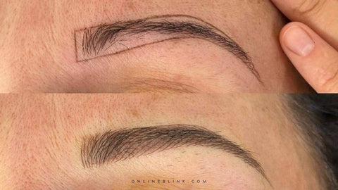
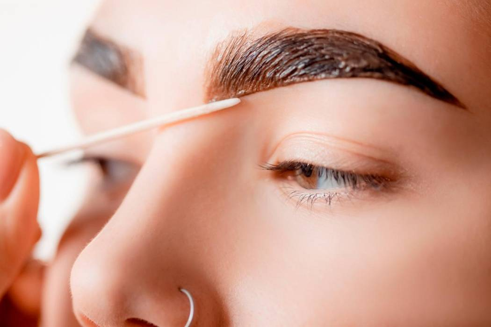
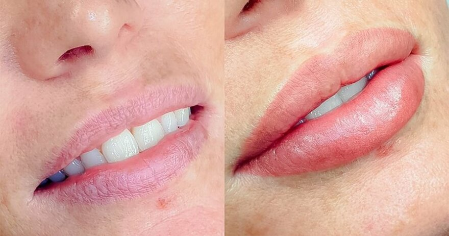

|  | MICROPIGMENTACIÓN |
|||||||||||||||
Con las técnicas de micropigmentación podemos rejuvenecer el rostro sin necesidad de cirugía, mediante efectos ópticos de elevación de cejas, párpados y comisuras de los labios conseguimos un aspecto más juvenil y elegante, consiguiendo un rostro más expresivo. |
||||||||||||||||
Microblading |
Micropigmentación de Labios |
|||||||||||||||
|  |  | |||||||||||||||
Es una técnica que permite obtener resultados hiperrealistas y muy naturales, 100% adaptados a cada rostro. Es un tratamiento ideal para personas que sufren alopecia o afecciones que afectan a la caída del vello en la zona, ya que podemos reconstruir la ceja por completo. Sin duda, puede marcar un antes y un después. |
La micropigmentación es un tratamiento duradero que no mancha y ayuda a recuperar la confianza y la autoestima al mejorar la forma y el color de los labios. Este procedimiento es adecuado tanto para mujeres como para hombres. |
|||||||||||||||